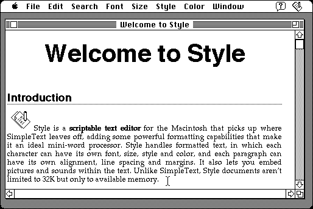

Download
style-161.zip (590K) Style 1.6.1 repackaged into a zipped hfs disk image and checksum file. The disk image can be mounted with Mini vMac.
style-161.sit (745K) Style 1.6.1 in the original format.
copyright: Merzwaren
mod date: Dec 28, 1999
license: shareware
official url :
Welcome to Style!
A "scriptable text editor for the Macintosh", that handles formatted text, embedded pictures and sound, multiple undo/redo, and many other features. Demonstrates the widely used WASTE text editing library by the same author.

If you find these downloads useful, please consider helping the Gryphel Project, which hosts them.
Here are the md5 checksums for the downloads, signed with Gryphel Key 5:
--------- GRY SIGNED TEXT --------- 408f8f492dc6671fe5214ce818a0fdb3 style-161.zip 611217c03df2c4e33d139d9018059ab2 style-161.sit ------- BEGIN GRY SIGNATURE ------- Gry/4Xa8CFcUzxdN/CjtmRm3zBXlnhEHaPlmv1OBgIvOX8R7a7w55u8+T1Y8eQMz tcfl0oSDptx3P8VO2cHVtC2TiMReCGx1E3xkzZG5EHDOjUM3Z8zZBswC7WEt+Yrj uTx14HgoTdJcVGo9jtths+O8LXmjQuJoOScBHtp5wRbCnTTrNuaP8Hmmwvig92vg -------- END GRY SIGNATURE --------